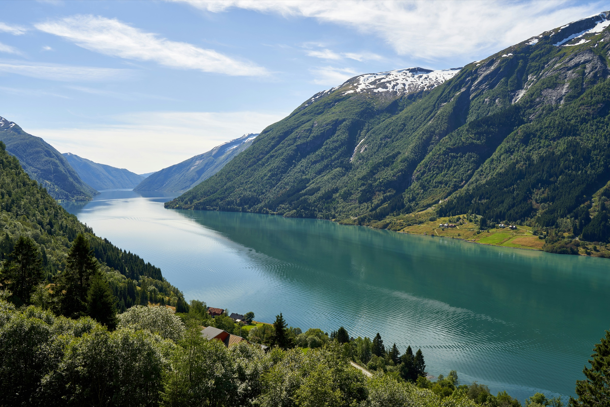
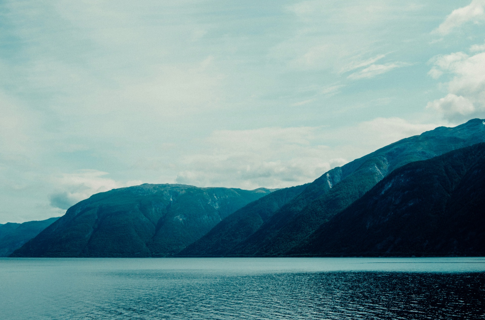
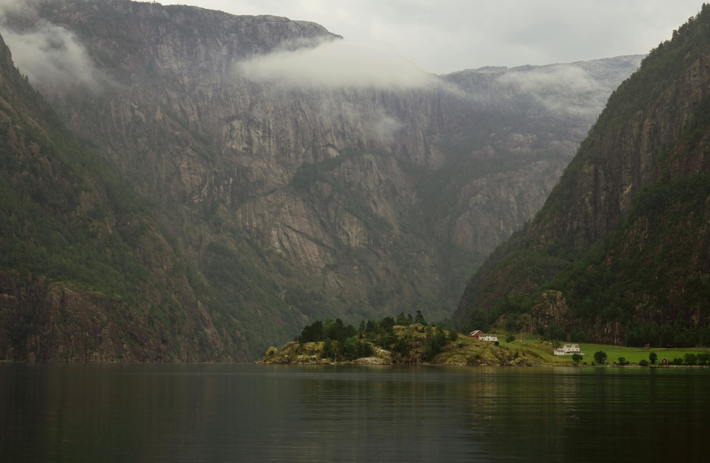
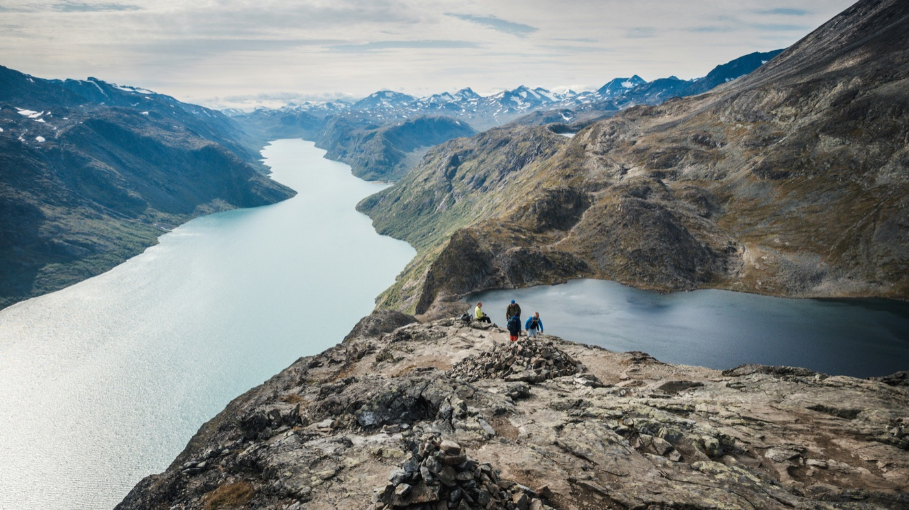
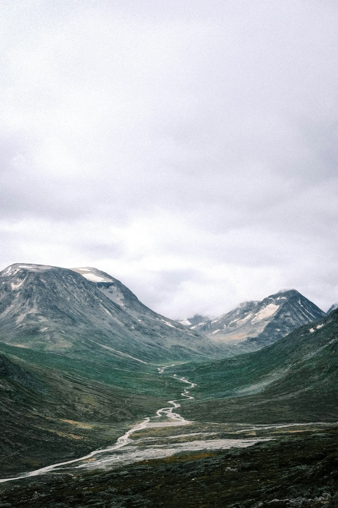

Fjord Walk
Fjord Walk
Fossestien — The Waterfall Path
Fourteen waterfalls, seven mountain lakes and historic trade routes along the Gaula River. Flexible length — hike 5, 8 or 13 km. Perfect for families and first-time visitors.

Private Sognefjord hiking tours — from easy waterfall trails to challenging alpine summits. Local guides, four routes, unforgettable fjord scenery.



The Sognefjord region is where the mountains meet the fjord — one of Norway's most spectacular settings. We offer guided hiking tours for all abilities, from family-friendly waterfall walks to challenging alpine routes deep in Stølsheimen.
Four private Sognefjord hiking tours — from gentle waterfall walks to demanding alpine routes. All depart locally from Høyanger.
Fjord Walk
Fourteen waterfalls, seven mountain lakes and historic trade routes along the Gaula River. Flexible length — hike 5, 8 or 13 km. Perfect for families and first-time visitors.
 Mountain
Mountain
A rewarding summit with panoramic views over the Sognefjord and surrounding peaks. A brisk first section is followed by pleasant open terrain to the top.
Mountain
A full mountain day crossing the Berge ridge above the Sognefjord — magnificent fjord views, dramatic industrial heritage, and some of the finest high terrain in Vestland.
 Alpine
Alpine
A serious alpine day into the heart of Stølsheimen protected landscape — traditional mountain farm heritage, remote high terrain and far-reaching views across western Norway's wildest peaks.
Fill in the form and we'll confirm your booking within 24 hours — including your meeting point, kit list and everything you need for the day.

Fossestien is one of Norway's most rewarding easy trails — a marked path along the Gaula River that threads past fourteen waterfalls and seven mountain lakes. The route follows historic trade paths used for centuries, connecting the valley communities of the Sognefjord region.
The trail is flexible by design: four parking areas allow you to pick the section that suits your group, whether that's a gentle one-hour valley stroll or the full 13 km mountain circuit. The path is clearly marked throughout with red F-signs and includes well-built bridges and boardwalks across the wettest sections.
In late spring the waterfalls run at full power from snowmelt, making for extraordinary sound and spectacle. In summer the mountain lakes are calm and perfect for a rest. This is the ideal introduction to the Sognefjord landscape for first-time visitors or families with younger children.

Bergefjellet is the Sognefjord region's signature half-day hike — a 7 km route that climbs from the Siplo ski centre area to a commanding summit with some of the finest views in all of Vestland. The initial section demands real effort, but the terrain opens up beautifully once the first cairn is reached.
From the summit the deep blue of the Sognefjord cuts between the mountains in every direction, with the broad sweep of Norway's longest and deepest fjord opening to the west. On clear days the Stølsheimen mountain massif fills the horizon to the south and east.
The marked trail continues from the summit across gently rolling terrain, offering the option to extend the walk or simply linger at the top with a packed lunch and the view. Back at the fjord by lunchtime.


Kraftruta — "The Power Route" — is the Sognefjord region's most celebrated full-day hike. The trail climbs from the fjordside into the Berge mountains, following the infrastructure of the hydroelectric power network that shaped the area, before crossing the dramatic ridge between Toppenhytta and Skålebotn.
At 700 metres of climbing over 13.5 km, this is a serious mountain day that rewards with some of the finest views in the region. From the ridge, the full sweep of the Sognefjord opens beneath you — mountain upon mountain stretching in every direction, with the Stølsheimen wilderness to the south.
The route is well-marked throughout and can also be done as an overnight with a stay at Toppenhytta mountain hut. Our guided version covers the full ridge traverse as a long day out.


Solrenningen is a remote alpine pasture at the heart of Stølsheimen — a vast protected landscape of some of western Norway's most dramatic high terrain. The route from Stølsdammen climbs nearly 900 metres into an area of traditional mountain farming that has been used for summer pasture for centuries.
This is a demanding route that requires good physical fitness and some previous mountain experience. The terrain becomes increasingly remote as you gain height, and route-finding beyond the waymarked sections requires attention. Your guide ensures safe navigation throughout.
The reward is access to a truly wild corner of Norway — broad alpine plateaus, views across Stølsheimen's ridgelines and summits, and the deep silence of the Norwegian high mountains. This is Norway as few visitors ever see it.
We offer four guided hikes covering all difficulty levels: Fossestien — The Waterfall Path (easy, flexible 5–13 km), Bergefjellet — Berg Mountain (moderate, 7 km), Kraftruta — The Power Route (hard, 13.5 km), and Solrenningen — Alpine Wilderness (very hard, 11.6 km). All tours depart locally in the Sognefjord region with a local guide.
Fossestien is ideal for families, first-time visitors, and those wanting a scenic stroll. Bergefjellet suits regular walkers looking for a rewarding half-day summit. Kraftruta is for fit hikers comfortable with a sustained full-day mountain challenge. Solrenningen is for experienced mountain hikers only. If you're unsure, get in touch and we'll help you choose.
Yes — every tour is fully private. We never combine bookings or share guides between groups. When you book, the tour is yours exclusively: just your group, your guide, and the fjord.
All tours include a qualified local guide for the full duration of the hike, route planning, and safety equipment. You are responsible for your own transport to Sognefjorden, hiking gear, food and water. Your guide will send a full kit list when you confirm your booking.
For Fossestien, sturdy walking shoes and a waterproof jacket are sufficient. For all other tours, proper hiking boots with ankle support are essential. Kraftruta and Solrenningen additionally require warm mid-layers, waterproof trousers, and a full emergency kit. Your guide will send a detailed list when you book.
The main hiking season runs from late May to September, when trails are clear of snow and weather is most reliable. Late May and June bring spectacular waterfall volumes from snowmelt. July and August offer the warmest, most settled conditions. Fossestien and Bergefjellet can sometimes be done in shoulder months with appropriate gear.
The Sognefjord region is located in Vestland county, about 3 hours from Bergen by road and ferry. It is served by the fjord ferry network and can be reached by car from Bergen via the E16 and ferry crossings. Your booking confirmation will include detailed travel information for your chosen tour.